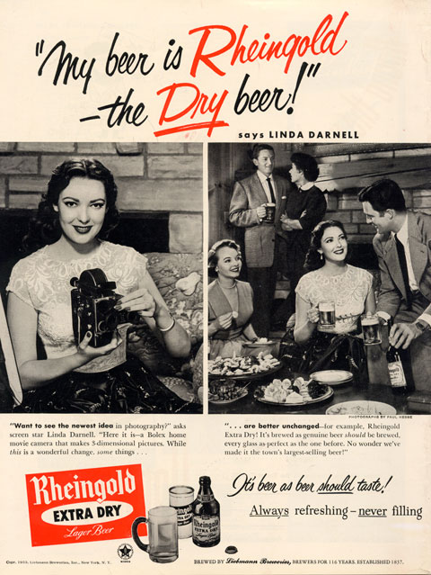

Magazine advertisements for Rheingold Beer often featured celebrities and the yearly Miss Rheingold
"Want to see the newest idea in photography?" asks screen star Linda Darnell. "Here it is -- a Bolex home movie camera that makes 3-dimensional pictures. While this is a wonderful change, some things...
"...are better unchanged -- for example, Rheingold Extra Dry! It's brewed as genuine beer should be brewed, every glass as perfect as the one before. No wonder we've made it the town's largest-selling beer!"
This is an interesting ad for several reasons; besides the obvious Bolex and beer product tie-in. Linda Darnell is pictured here, holding a H-16 Deluxe with Bolex Stereo equipment attached.
The Bolex reporter suggests that, according to product registration cards, a "more-than-glamorous Hollywood film star... and Bolex owner... was the first Lady owner of Bolex Stereo equipment." [1] A "how-to" article written by this celebrity was promised for a future issue; unfortunately, it was never published. Whether or not this star was Linda Darnell is uncertain, but this ad appeared on the back of the next issue of the Bolex Reporter (Summer 1953).
The following year, she married Philip Liebmann, head of Rheingold Beer and the originator of the "Miss Rheingold" contest. Tragically, alcoholism hampered much of her career; she later died at 41 years old, from injuries suffered in a fire.
1 Thomas H. Elwell, "It Might As Well Be Spring," Bolex Reporter, Spring 1953, 3.